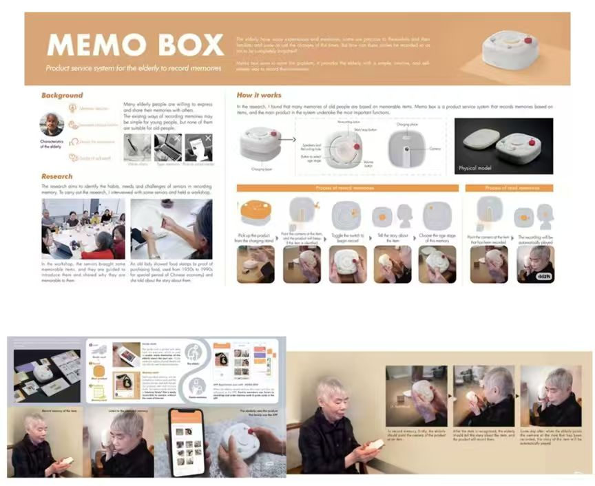
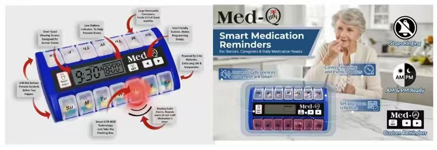

Running the Flowing LED Light Program
运行流水灯程序
1 - Library Installation Steps
This flowing light experiment uses basic digital pin control and does not require any additional third-party libraries. You can write, compile, and upload the code directly in the Arduino IDE.
2 - Application Code
2.1 Final Flowing Light Code

图片 2-1
2.2 Code Logic Explanation
The array ledPins[] defines the 5 digital pins connected to LEDs, and numLeds stores the total number of LEDs, making it easy to perform batch operations.
A for loop sets all LED pins to OUTPUT mode and initializes them to low level, ensuring all LEDs are off when powered on.
The for loop turns on each LED in sequence, keeps it on for 200ms, then turns it off. This creates a sequential lighting effect from pin 1 to pin 5, forming the "flowing light" effect.
Modify the value inside delay(200) to change the flow speed of the lights. You can also change the pin numbers in the ledPins[] array to adapt to different wiring schemes.
3 - Circuit Diagram
This diagram shows the complete wiring plan for the flowing light experiment:

图片 2-2
Components
Arduino UNO main board, breadboard, 5 LED beads, 5 current-limiting resistors.
Wiring Logic
- Digital pins 1~5 of the Arduino are connected to the anode (long leg) of each corresponding LED through a current-limiting resistor.
- The cathode (short leg) of all LEDs is connected to the GND line on the breadboard.
- The breadboard's GND line is finally connected to the Arduino's GND pin to form a complete circuit.
4 - Physical Connection Steps
Follow these steps based on the circuit diagram:

图片 2-3
- Connect the Arduino UNO to your computer via a USB cable to ensure power supply and device recognition.
- Insert 5 LEDs into the breadboard with the anode (long leg) facing the resistor side and the cathode (short leg) facing the GND side.
- Connect a 220Ω current-limiting resistor to the anode of each LED, then use jumper wires to connect the resistors to Arduino digital pins 1~5.
- Connect the cathode of all LEDs to the Arduino's GND pin via the same column on the breadboard.
- Confirm there are no short circuits or loose connections before uploading the code for testing.
5 - Flowing Light Effect Demonstration

图片 2-4

图片 2-5

图片 2-6

图片 2-7